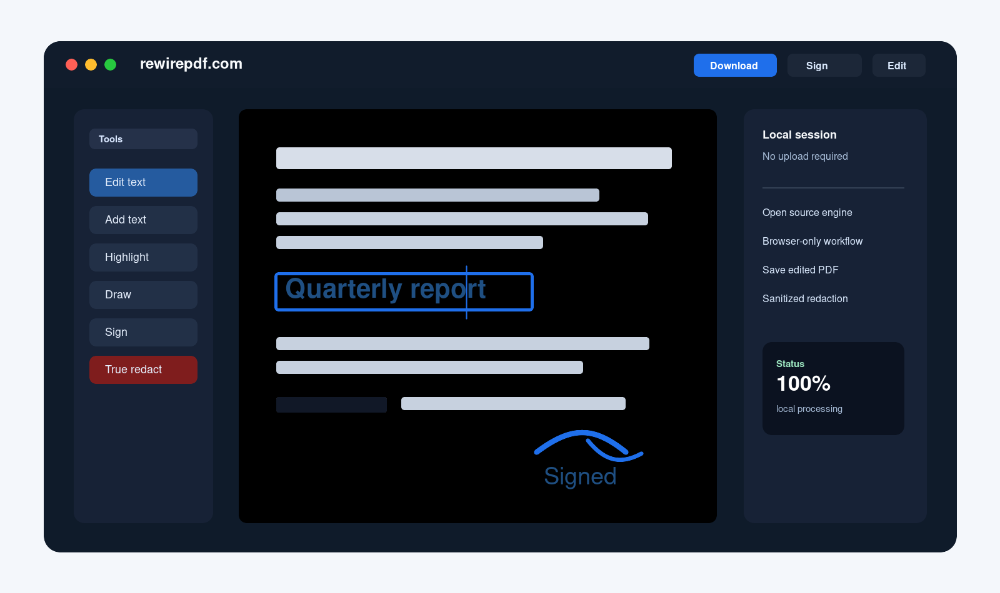

Install from the browser
Add RewirePDF to your home screen, dock, or app launcher from the browser install prompt when available.

Open source PDF editor, in your browser
Edit, sign, annotate, and redact PDFs without sending your documents to an external service. The app runs locally, follows your browser language, can be installed as a PWA, and the code is open.
Why it exists
RewirePDF is built for practical PDF edits directly in the browser: open a file, work on the document, and download the result. No installation, and no need to send contracts, resumes, invoices, or forms to a backend.
Some operations depend on the internal structure of the PDF. When a source-level edit is not safe, the app tells you instead of pretending that a visual cover-up is a real edit.
Installable PWA
RewirePDF can be installed from supported browsers on desktop and mobile. The app shell is cached for faster starts and offline access, while your PDFs are not uploaded or automatically saved in browser storage.
Add RewirePDF to your home screen, dock, or app launcher from the browser install prompt when available.
The viewer interface can start from cache even without a network connection, so you can keep working with local files.
Use the file picker to open documents from your device. RewirePDF does not automatically cache PDFs you open.
What you can do
Change source text in compatible PDFs while keeping the document editable and downloadable.
Insert notes, filled fields, corrections, or new lines with font, size, color, bold, and italic controls.
Create a signature by typing, drawing, or importing an image, then place it on the document.
Real redaction when supported: remove content from the PDF, instead of just drawing a rectangle over text.
Use highlights, freehand ink, thickness, color, and opacity for quick reviews or visual notes.
Add images, logos, stamps, or graphic elements and keep them in the exported file.
Work with comments and notes for clearer document reviews.
Open, rotate, organize, save, and download the edited PDF.
Privacy by default
RewirePDF reads, renders, and edits in the browser. That reduces the risk of exposing sensitive data and makes the app suitable for personal files, work documents, contracts, and forms.
Open source
RewirePDF extends PDF.js with editing and saving features. The project is meant to be inspectable: you can read the code, follow development, and verify how your files are handled.
Ready when you are